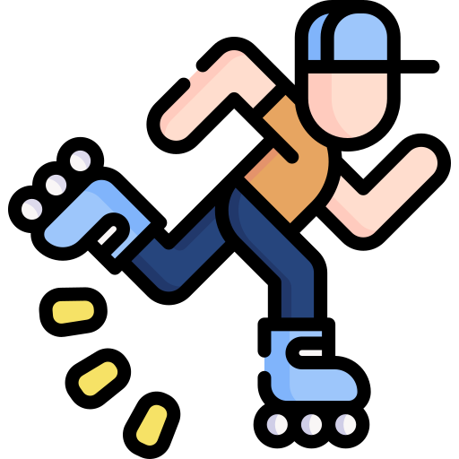

To learn obedience and discipline,” Arobynn Hamel had said. In the height of summer in the Red Desert was what he’d failed to add. It was a punishment. Two months ago, when Arobynn had sent Celaena along with Sam Cortland to Skull’s Bay on an unknown errand, they’d discovered that he’d actually dispatched them to trade in slaves. Needless to say, that hadn’t sat well with Celaena or Sam, despite their occupation. So they’d freed the slaves, deciding to damn the consequences.

The man remained atop the dune, and pointed again to the horizon. “Two miles that way.” His use of the common tongue was a bit unwieldy, but she understood him well enough.
She pulled down the scarf from her mouth, wincing as a gust of sand stung her sweaty face. “I paid you to take me there.”